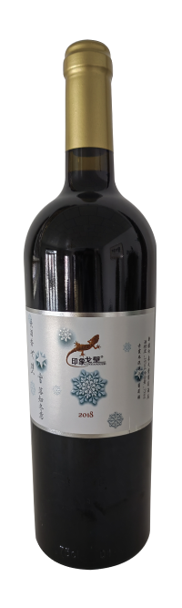
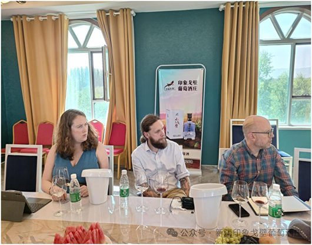
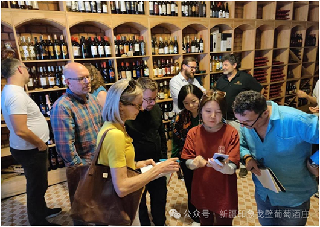
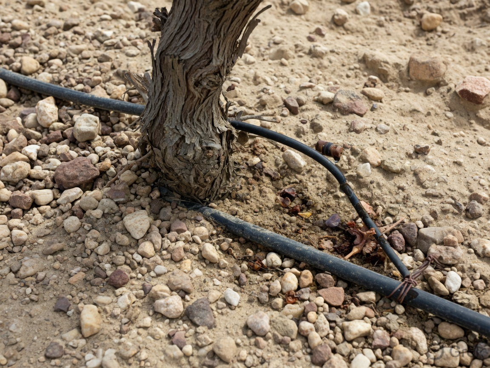

Estate fruit. Organic blocks. Blends that keep pepper and structure — not soft fruit bombs.


The house blend. Herb and pepper on the nose, dark fruit underneath, tannins that do not disappear after one sip.
Typical blend around Cabernet Sauvignon with Merlot and Syrah. A 2018 example earned a Decanter World Wine Awards bronze — described as herbaceous, peppery, with sweet spice and powerful structured tannins. That is the style we aim for: not jam, not thin.

Blackberry, plum, a soft middle. Marselan likes heat and dry air — which is most of what we have.
Impressions of Gobi Marselan blends have been noted for ripe blackberry and plum, with a lush, velvety mid-palate. We use Marselan both as a lead variety and in blends. If you only know Cabernet from Australia, this is the Chinese grape worth learning next.

From organic plantings. Smoke, black cherry, black pepper — a little leaner, a little clearer.
Decanter notes on our organic lines have mentioned stewed black cherries, smoke, and black pepper, with ripe fruit and a crisp edge. These are the bottles for buyers who ask about farming before they ask about medals.
“If you like Barossa heat and firm tannin, start here.”— For Australian drinkers